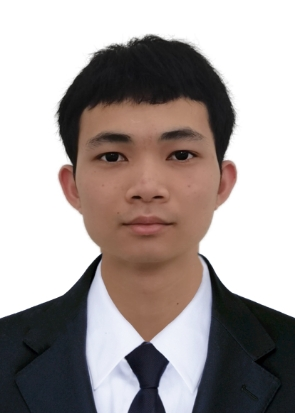

Yexiong Lin 林业雄Ph.D. Student
Sydney AI Centre
Address: J12/ 1 Cleveland St, Darlington, NSW 2008, Australia
|
 |
Biography
I am a bachelor-straight-to-Ph.D. student at the School of Computer Science, the University of Sydney (USYD). I received the bachelor's degree from the College of Computer Sciences and Electronic Engineering, Hunan University in 2022. My research mainly focuses on trustworthy machine learning and generative models.
Education Background
-
Ph.D. student, 2023.03 - 2026.09 (expected) The University of Sydney, Australia, advised by Prof. Tongliang Liu
-
B.Eng., 2018.09 - 2022.06 Hunan University, Changsha, China
Selected Publications
Improving the Instance-Dependent Transition Matrix Estimation by Exploiting Self-Supervised Learning.
Yexiong Lin, Yu Yao, Zhaoqing Wang, Xu Shen, Jun Yu, Bo Han, Tongliang Liu.
TPAMI, 2025.
Learning the Latent Causal Structure for Modeling Label Noise.
Yexiong Lin, Yu Yao, Tongliang Liu.
NeurIPS, 2024.
CS-Isolate: Extracting Hard Confident Examples by Content and Style Isolation.
Yexiong Lin, Yu Yao, Xiaolong Shi, Mingming Gong, Xu Shen, Dong Xu, Tongliang Liu.
NeurIPS, 2023.
Preprints
Beyond Optimal Transport: Model-Aligned Coupling for Flow Matching
Yexiong Lin, Yu Yao, Tongliang Liu.
arXiv, 2025.
Do We Need to Penalize Variance of Losses for Learning with Label Noise?
Yexiong Lin, Yu Yao, Yuxuan Du, Jun Yu, Bo Han, Mingming Gong, Tongliang Liu.
arXiv, 2022.
Honors and Awards
International Conference on Machine Learning, Top Reviewer Award, 2% in reviewers, 2025.
The Second Prize of Undergraduate Electronic Design Contest - 2020 Embedded System Design Invitational Contest(Intel Cup), 2020.
Academic Service
- Reviewer: ICLR, ICML, NeurIPS, ACM MM, AISTATS, TMLR, AJCAI, ACML, ICPR, IJCNN, etc..
| © Yexiong Lin | Last update: September 2025 |